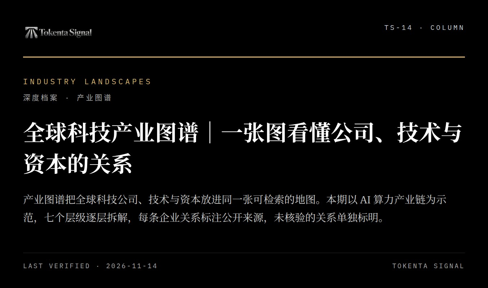
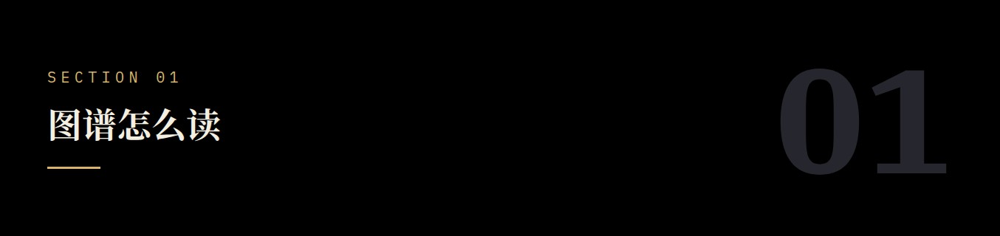
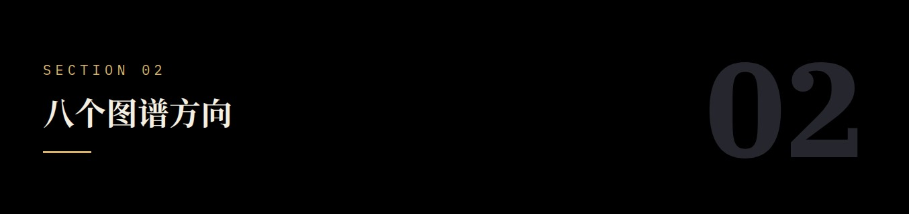
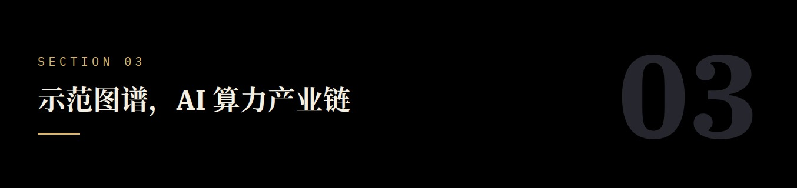
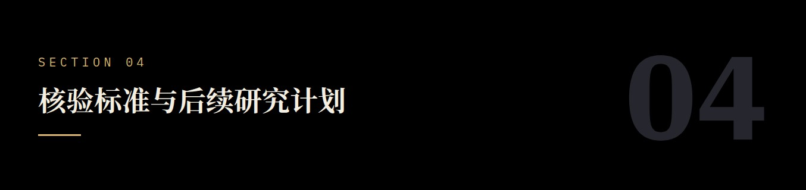

单条新闻只能告诉读者发生了什么。产业图谱回答的是另一个问题，这些公司彼此之间是什么关系，谁向谁供货，谁给谁投资，谁的订单决定了谁的产能。把公司、技术与资本放进同一张图里，新闻就从孤立的事件变成可以追踪的结构。
本栏目按产业链层级组织内容。每一层写清代表企业、核心产品、与上下游的关系、竞争关系、技术依赖与商业模式。图谱里的企业关系分两种写法，有公开来源支撑的写成事实并标注出处，属于行业通行结构但本期没有逐条核验的，单独标明为通行结构，不与已核验关系混在一起。

读一张图谱，先看层级顺序。越靠上游的层级，参与者越少，议价能力通常越强，产能变化传导到下游需要的时间也越长。再看关系类型。供应关系决定成本与交付，租赁关系决定算力落在哪里，投资与信用支持关系决定谁在为谁的风险买单。三种关系叠在同一张图上，才能看出一次产能扩张背后真正的出资人是谁。
图谱是长期资产。每张图谱标注最后核验日期，后续有新的并购、投资或供货关系公开时，在原图谱上增补并更新日期。读者按公司名或层级检索，就能找到这家公司在产业链中的位置，以及它与上下游的全部已核验关系。
层级位置本身就是一条信息。一家公司同时出现在两个层级里，说明它在做纵向整合，例如谷歌既在芯片设计层自研 TPU，又在运营层卖云服务，还在资本层为他人的租约提供信用支持。一家公司从某一层消失，或者被另一层的公司收购，说明产业链的利润分配正在变化。读图谱时把同一家公司在不同卡片里的出现次数数一遍，往往比单看一条新闻更早发现这种变化。

AI 模型生态图谱，梳理基础模型厂商、开源权重阵营与模型分发平台之间的授权、投资与竞争关系。AI Agent 生态图谱，梳理智能体框架、工具调用协议、企业级部署平台与模型厂商之间的依赖关系。AI 芯片产业链图谱，梳理从晶圆制造、先进封装到加速器设计与服务器整机的完整链条，本期的示范图谱就出自这个方向。
数据中心与算力图谱，梳理园区开发商、电力供给、云厂商与模型公司之间的租赁和共建关系。人形机器人图谱，梳理执行器、传感器、整机厂与场景方之间的供应关系。AI 企业应用图谱，梳理办公、客服、编程与安全等赛道里平台方与应用方的竞争格局。科技资本生态图谱，梳理产业资本、主权基金与风险投资在科技公司之间的持股与跟投关系。八个方向共用同一套字段与核验标准，方便跨图谱对照。
八张图谱之间互有接口。同一家公司会反复出现在不同图谱里，台积电在芯片产业链图谱里是制造层，在资本生态图谱里又是向模型公司出资的投资方。跨图谱追踪同一家公司，可以看清它在技术链条与资本链条上的双重位置，这也是单张图谱给不了的视角。每张图谱在相关位置标注它与其他图谱的接口公司，读者可以顺着公司名在图谱之间跳转。

AI 算力产业链可以拆成七个层级。最上游是晶圆制造与先进封装，往下依次是加速器与处理器设计、光互连与网络、数据中心建设与园区、云与算力运营，最下游是模型公司，也就是算力的最终需求方。资本层横贯全部层级，它不生产任何硬件，却决定每一层的扩张速度。下面七张卡片按层级排列，每条关系都标注了公开来源。
先看一组已经核验的关系。AMD 官方新闻稿确认，第六代 EPYC 处理器（Venice）基于台积电 2 纳米工艺量产，Meta 名列其发布会公布的验证客户。台积电董事会批准向 Anthropic 与 OpenAI 各投资最高 5 亿美元。TeraWulf 向美国证券交易委员会提交的 8-K 文件确认，Anthropic 在其肯塔基州园区签下约 190 亿美元的 20 年租约，谷歌为这份租约提供信用支持。这三组关系分别属于供应、投资与租赁，正好覆盖图谱里最常见的三种关系类型。
也有关系只能写到媒体报道这一层。路透社报道英伟达正提供数十亿美元融资，扩建日月光旗下矽品精密的 CoWoS 封装产能，金额与条款没有公司公告确认，本图谱按媒体报道口径收录。英伟达拟为英国云厂商 Nscale 的债务提供担保一事，据 The Information 报道仍在谈判，协议尚未签署，本图谱只在资本层卡片里标注状态，不写成已成立的关系。
第一层，晶圆制造与先进封装
层级 产业链最上游，决定全部下游的产能上限
代表企业 台积电（晶圆代工），日月光旗下矽品精密（先进封装）
核心产品 2 纳米制程晶圆，CoWoS 先进封装
与上下游的关系 AMD 官方新闻稿（2026-05-21）确认第六代 EPYC（Venice）采用台积电 2 纳米工艺量产。路透社报道英伟达提供数十亿美元融资扩建矽品精密的 CoWoS 产能，该笔融资无公司公告确认，按媒体报道口径记录
商业模式 按晶圆与封装产能收费，客户预付与长期产能协议锁定订单
公开来源 AMD 官方博客 2026-11-10，The Hindu BusinessLine 转引路透社 2026-11-06
英伟达与矽品精密的融资关系仅有媒体来源，金额未获公司确认。
第二层，加速器与处理器设计
层级 芯片设计层，把上游产能变成可售卖的算力硬件
代表企业 英伟达，AMD，谷歌（自研 TPU）
核心产品 GPU 加速器，EPYC 服务器处理器，TPU 8tx 与 TPU 8i Max
与上下游的关系 AMD 第六代 EPYC 9006 已于 2026-11-10 出货，Meta 名列 AMD 发布会公布的验证客户（发布会材料口径）。谷歌 2026-11-09 发布第八代 TPU 的 8tx 与 8i Max，TPU 以自用为主，不对外单独售卖
竞争关系 英伟达与 AMD 在数据中心加速器市场直接竞争，谷歌用自研 TPU 降低对外部采购的依赖，三条路线并存
商业模式 芯片销售为主，谷歌 TPU 通过自有云服务变现
公开来源 AMD 官方博客 2026-11-10，Google 官方博客 2026-11-09
第三层，光互连与网络
层级 连接层，决定大规模集群内部的数据传输效率
代表企业 Marvell，Lumentum
核心产品 光模块，光互连器件，定制芯片互连方案
与上下游的关系 Marvell 与 Lumentum 于 2026-11-02 宣布全股票合并，参考企业价值 1150 亿美元，目标 2028 年上半年完成交割。交易完成前两家公司仍独立运营
技术依赖 集群规模越大，对光互连带宽的依赖越强，这一层属于行业通行结构，本期未逐条核验具体供货合同
商业模式 器件与模块销售，并购整合后向整机与云客户打包供货
公开来源 The Motley Fool 2026-11-02 对合并公告的报道
合并尚待交割完成，图谱按已宣布、未完成状态记录。
第四层，数据中心建设与园区
层级 物理承载层，负责选址、供电与园区建设
代表企业 TeraWulf，Crusoe
核心产品 数据中心园区，配套电力容量
与上下游的关系 TeraWulf 8-K 文件确认，Anthropic 在其肯塔基州 Justified 园区签下 401 兆瓦、约 190 亿美元的 20 年租约。Crusoe 宣布谷歌接手其怀俄明东南部数据中心地块，选址、审批与供电方案已由 Crusoe 前期完成
商业模式 长期租约与地块开发转让，租期以十年为单位计
公开来源 TeraWulf 8-K 文件 2026-11-04，Unite.AI 2026-11-06
第五层，云与算力运营
层级 运营层，把机房与芯片变成可调用的算力服务
代表企业 谷歌
核心产品 云计算服务，自研 TPU 算力
与上下游的关系 谷歌接手 Crusoe 的怀俄明地块后，宣布在怀俄明投资 170 亿美元建设州内第一座数据中心。谷歌同时向上游芯片层自研 TPU，向园区层以信用支持方式介入他方租约
竞争关系 云厂商之间竞争的焦点已经从价格转向谁能先拿到电力与园区，这一判断来自本层已核验的接手与投资动作
商业模式 算力按用量计费，自有模型与第三方客户共用同一套基础设施
公开来源 Unite.AI 2026-11-06，MLQ News 对同一交易的报道
本层目前只收录素材可核验的谷歌一家，其余云厂商待后续图谱逐家补入。
第六层，模型公司，需求端
层级 产业链最下游，算力的最终购买方
代表企业 Anthropic，OpenAI，Meta
核心产品 基础模型与模型 API 服务
与上下游的关系 Anthropic 以 20 年租约锁定 TeraWulf 园区产能。Meta 名列 AMD 发布会公布的 EPYC 9006 验证客户（发布会材料口径）。台积电董事会批准向 Anthropic 与 OpenAI 各投资最高 5 亿美元，上游制造商反向持股下游客户，是本层最值得跟踪的关系变化
商业模式 API 按量计费与企业订阅，算力成本是其最大单项支出
公开来源 TeraWulf 8-K 文件 2026-11-04，AMD 官方博客 2026-11-10，AIStockWire 2026-11-10 对台积电董事会决议的报道
台积电投资一事的原始出处为台积电董事会决议，本图谱引用的报道已注明决议日期与金额上限。
第七层，资本层
层级 横贯全部层级，决定每一层的扩张速度与风险归属
代表企业 谷歌（信用支持方），台积电（产业投资方），英伟达（融资提供方）
核心产品 信用支持协议，战略股权投资，供应商融资
与上下游的关系 谷歌 2026-11-04 签署信用支持协议，为 Anthropic 在 TeraWulf 园区的约 190 亿美元租约兜底，帮助项目获得成本更低的融资。台积电向两家模型公司各投资最高 5 亿美元。据 The Information 报道，英伟达拟为英国云厂商 Nscale 的债务提供担保，协议尚未签署，本图谱标注为未成立
商业模式 以资产负债表换取供应链优先级与客户锁定，回报不体现在单笔交易里
公开来源 TeraWulf 8-K 文件 2026-11-04，AIStockWire 2026-11-10，Skimwire 转引 The Information 2026-10-31
Nscale 担保仍在谈判阶段，未签署前不计入已成立关系。

本栏目的核验标准只有一条主线，关系必须有出处。公司公告、交易所文件与官方博客可以直接支撑一条关系。媒体报道可以收录，但要在卡片里写明报道方与日期，并注明无公司确认。分析师推测与市场传闻不进图谱。上下游的一般分工属于行业通行结构，可以用来解释层级，但不能用来证明某两家公司之间存在具体交易。
后续图谱按季度推进。先补齐 AI 算力产业链里缺席的环节，包括电力设备、液冷与服务器整机，再依次制作 AI Agent 生态与人形机器人产业链两张完整图谱。每张图谱发布时标注核验日期，旧图谱的关系失效后保留历史版本并注明变更原因，方便读者回溯一家公司的关系变化过程。

01 按公司名检索，先在本图谱确认它所在的层级，再顺着卡片里的关系字段看它的上下游。
02 看一条关系时先看公开来源一栏，交易所文件与官方公告的可信度高于媒体报道，标注为未成立或媒体口径的关系不要当作既定事实引用。
03 标注为行业通行结构的内容只说明一般的产业分工，不代表图谱里的具体公司之间存在已核验的交易。
04 图谱按核验日期更新，发现关系变化或来源失效时，以最新一期图谱为准。

SOURCES · 来源与核验
[1] TeraWulf 8-K 文件，谷歌信用支持与 Anthropic 约 190 亿美元租约，2026-11-04
[2] AMD 官方博客，EPYC 9006 出货，2026-11-10；AMD 投资者关系新闻稿，Venice 采用台积电 2 纳米量产，2026-05-21
[3] Google 官方博客，TPU 8tx 与 8i Max 发布，2026-11-09
[4] The Hindu BusinessLine 转引路透社，英伟达融资扩建矽品精密 CoWoS 产能，2026-11-06
[5] Unite.AI，谷歌接手 Crusoe 怀俄明数据中心地块，2026-11-06
[6] AIStockWire，台积电董事会批准向 Anthropic 与 OpenAI 各投资最高 5 亿美元，2026-11-10
[7] The Motley Fool，Marvell 与 Lumentum 1150 亿美元全股票合并，2026-11-02
[8] AMD 投资者关系新闻稿，Venice 在台积电 2 纳米工艺量产，2026-05-21
[9] TeraWulf 8-K 附件，Anthropic 20 年租约与 401 兆瓦关键 IT 负载细节，SEC 文件
[10] Skimwire 报道，英伟达拟为 Nscale 债务提供担保（转引 The Information），2026-10-31
LAST VERIFIED · 2026-11-14
TOKENTA SIGNAL
Extracting signals from the noise. 本栏目内容来自公开来源并标注核验日期，不构成任何投资建议。
signal.tokenta.space · team@tokenta.space